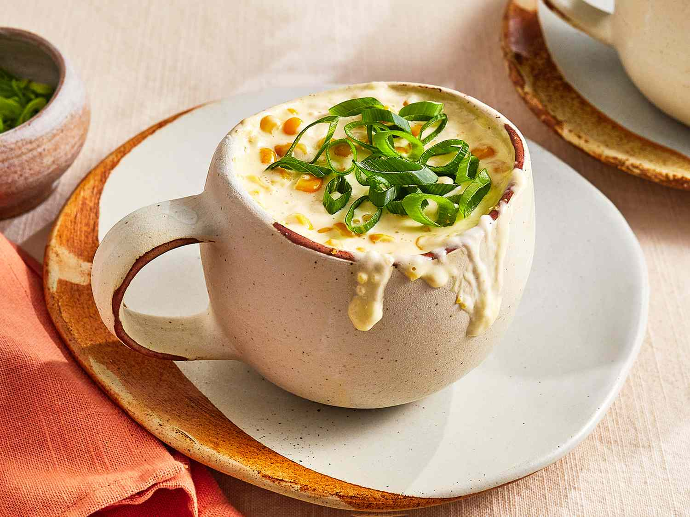

Corn Cheese

Ingredients:What goes in it?
- 3 tablespoons quick-cooking grits
- ¾ cup water
- ½ teaspoon kosher salt, divided
- tablespoon unsalted butter
- ¼ cup corn kernels
- 2 tablespoons shredded whole-milk mozzarella cheese
- ½ teaspoon sugar
- 1 tablespoon Japanese mayonnaise
- freshly cracked black pepper
- 1 tablespoon whole milk, or more as needed
- 1 scallion (dark part only), thinly sliced
Steps and Directions
Before we start, let us put on some Drake to get in the mood
- To a 12-ounce microwave-safe mug (or larger), add the grits, water, and ¼ teaspoon of kosher salt. Stir together with a fork or whisk and place on a microwave-safe plate to catch any overflow. Microwave on high power for 1 ½ minutes, then remove, add 1 tablespoon unsalted butter, and stir. Microwave for another 1 ½ to 2 minutes, or until the grits are tender. Add additional seasoning if needed.
- In a small bowl, stir together the corn, mozzarella cheese, sugar, Kewpie mayonnaise, and remaining ¼ teaspoon kosher salt, and as much freshly cracked black pepper as makes you happy.
- Remove the grits from the microwave and add 1 tablespoon of whole milk. If it is still too thick for your liking, add more a splash at a time until it reaches your desired consistency. Add the corn cheese mixture on top and microwave on high power—without stirring together!—for 45 seconds, or until the cheese is completely melted.
- Mix the corn cheese into the grits thoroughly, then top with sliced scallions. Get a good cheese pull for your photo and enjoy!